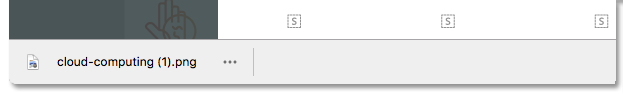

Note: If you have similar extensions enabled, this could lead to the shelf not being disabled. Make sure you don't have other extensions enabled in Chrome that are trying to disable the download shelf.

Please note
There is an unfixed bug in the Google Chrome API which causes this extension to always reset the downloads folder to the default folder. This is a bug in the Chrome API, not a bug in the "Always Clear Downloads in Chrome" extension.
For instance, if you configure Chrome's default download folder to "c:\downloads" in Chrome's Advanced Settings, then this extension will keep resetting the folder to be that. If you download a file to a different target location using "Save link as...", and pick a different location such as "c:\other\folder" then instead of that new location being the new default, this extension will cause downloads to go back to "c:\downloads" on the next download.
This might not be expected, but it's how the Chrome API works. You might get around this by simply disabling the download shelf instead - instead of clearing the downloads every few seconds. Or increase the clearing interval to an hour, in case you have to download a lot of files to a specific folder.